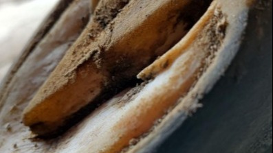
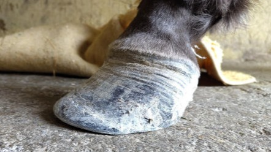
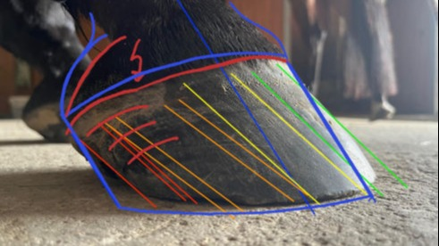
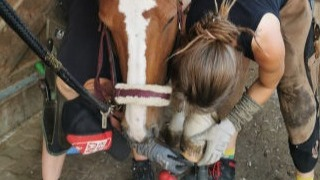
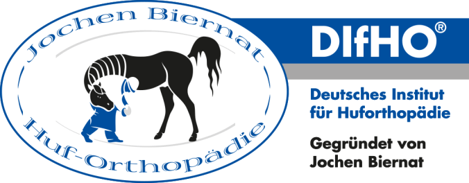

Die Huforthopädie ermöglicht es dem Pferd, einen funktionalen, dem Körper angepassten und gesunden Huf wachsen zu lassen.
Dabei müssen auch die Strukturen im Innern des Hufes und des Pferdebeines Beachtung finden.
Der Huf wird so bearbeitet, dass das Pferd sich seinen gesunden Huf (fast) von alleine anläuft. Dadurch können sich auch Knochen, Gelenke, Bänder und Sehnen ohne Schaden auf die neue Situation einstellen.
Eine verbesserte Hufsituation bedeutet automatisch eine positive Wirkung auf den Körper: Durch gesünderes Auf- und Abhufen und eine verbesserte Drucksituation im Huf, könne die an den Hufen beginnenden Faszienbahnen die positive Wirkung der gesünderen Hufsituation direkt in den gesamten Körper übertragen.
| Hier geht es zum Blog "Gut zu Huf"
Der Huf ist nicht nur das Ende des Beines sondern hat einige wichtige Funktionen für das Pferd. So ist er z.Bsp. Tastorgan, gleicht Bodenunebenheiten aus, wodurch die Gelenke geschont werden und ist maßgeblich an der Rückführung von Lymphe und Blut nach oben beteiligt.
Viele Pferdebesitzer scheuen sich jedoch aufgrund schlechter Hornqualität davor die Hufeisen abzunehmen. Paradoxerweise sind aber oft gerade Hufeisen die Ursache dafür. Barhuf werden die hornproduzierenden Häute viel besser durchblutet und können so besseres Horn bereitstellen.
|Hier geht es zum Blog "Fühlig oder fühlend?"
Ein weiterer großer Vorteil besteht darin, dass alte Pferde sich ihren Huf so hinlaufen können, dass er zu ihrer körperlichen Situation passt. So werden erkrankte Strukturen geschont und Schmerzen gelindert. Meine Aufgabe ist es dann, das hier nötige Gleichgewicht zu finden.

Eine regelmässige Hufbearbeitung ist die Voraussetzung für gesunde Hufe und gesunde Bewegungsabläufe. Damit deinem Pferd noch schneller ein gutes Hufgefühl ermöglicht werden kann, lernst du bei mir, wie du zwischen den Terminen selbst die Raspel einsetzt.

Die meisten Hufrehen sind stoffwechselbedingt. Entsprechend umfangreich ist eine erfolgreiche Genesung. Damit du dich nicht alleine fühlst und an der Situation verzweifelst, begleite ich dich durch diese Zeit.

Du bist unsicher, ob die Hufe deines Pferdes gesund sind? Oder ob sie sich in die richtige Richtung entwickeln? Oder würdest du gerne auf barhuf umstellen, zweifelst aber daran, ob dein Pferd das packt? Bei deiner persönlichen Hufberatung kannst du mir all deine Fragen stellen.

Nimm die Hufbearbeitung deines Pferdes selbst in die Hand!
Lerne, worauf du bei den Hufen deines Pferdes achten musst und wie du sie selbst bearbeiten kannst.

Mobirise web page maker - Try here